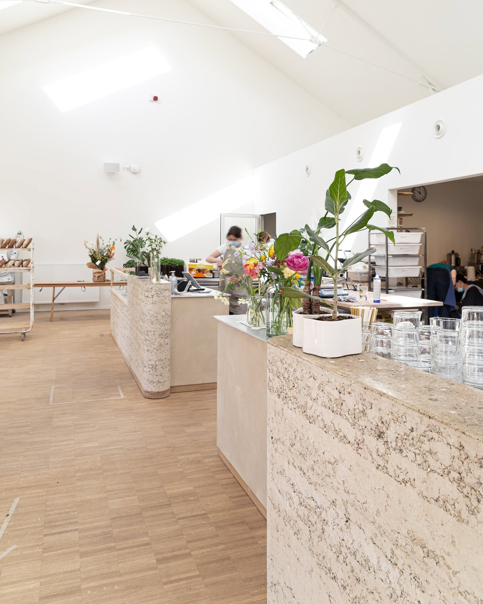
Ontbijt, lunch & vers gebakken brood, aan de rand van het park. Breakfast, lunch & fresh-baked bread, on the edge of the park.
Een lichte, groene plek naast het Harmoniepark voor een rustig ontbijt, een snelle lunch of een koffie in de zon. Alles bio, alles vers, alles met de hand gemaakt in onze eigen bakkerij. A bright, green spot next to Harmoniepark for a slow breakfast, a quick lunch or a coffee in the sun. Everything organic, everything fresh, everything made by hand in our own bakery.
Een oude oranjerie, wakker gemaakt An old orangery, brought back to life
"We zochten geen tweede café. We zochten licht, ruimte en een oven groot genoeg voor echt zuurdesembrood." "We weren't looking for a second café. We were looking for light, space, and an oven big enough for real sourdough."
Nives opende in 2021 naast het vernieuwde districtshuis, in het voormalige hangar-gebouw aan de rand van het Harmoniepark. De zaak wordt uitgebaat door Nausikaä Van Veerdegem en Lauranne De Vos, die met Cafématic op het Vleminckveld al jaren ervaring hebben in koffie en gastvrijheid. Nives opened in 2021 next to Antwerp's newly renovated district house, inside a former hangar-like hall on the edge of Harmoniepark. It's run by Nausikaä Van Veerdegem and Lauranne De Vos, who've spent years behind the counter at Cafématic on Vleminckveld.
Binnen is het precies wat de buitenkant belooft: hoge glazen daken, ruwe terrazzo toonbanken, licht houten vloeren en overal verse bloemen. Elke ochtend wordt in onze eigen bakkerij het zuurdesembrood gekneed en gebakken — de rest van de kaart bouwt daarop verder, met bio en seizoensgebonden ingrediënten van lokale producenten. Inside, it's exactly what the building's façade promises: tall glazed roofs, raw terrazzo counters, pale wood floors and flowers everywhere. Every morning our own bakery kneads and bakes the day's sourdough — the rest of the menu builds outward from there, with organic, seasonal ingredients from local producers.
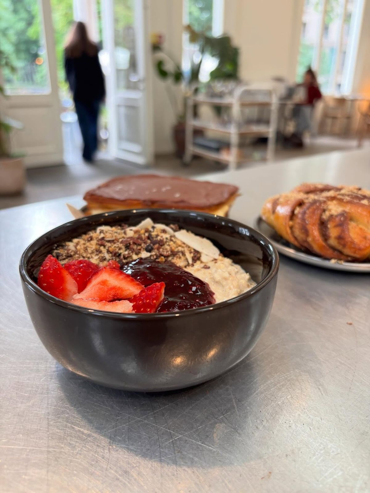
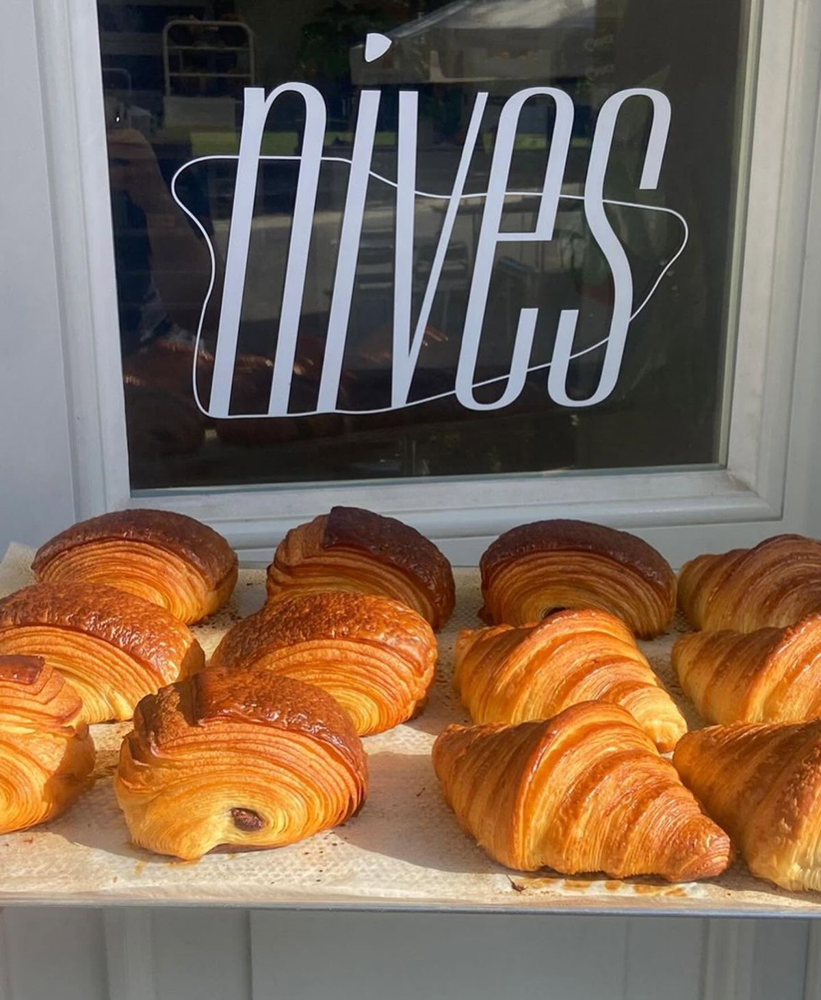
nives, in beeld nives, in pictures
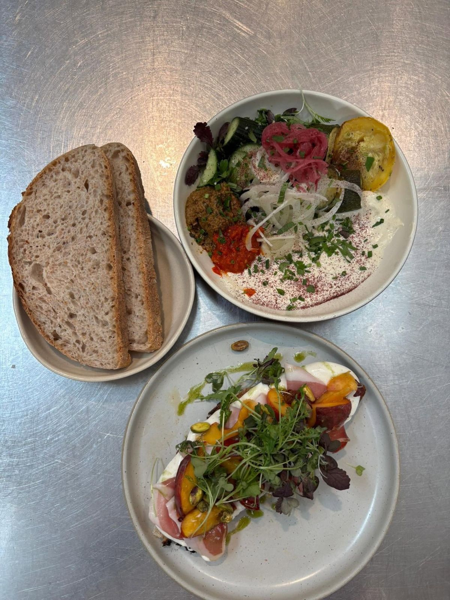
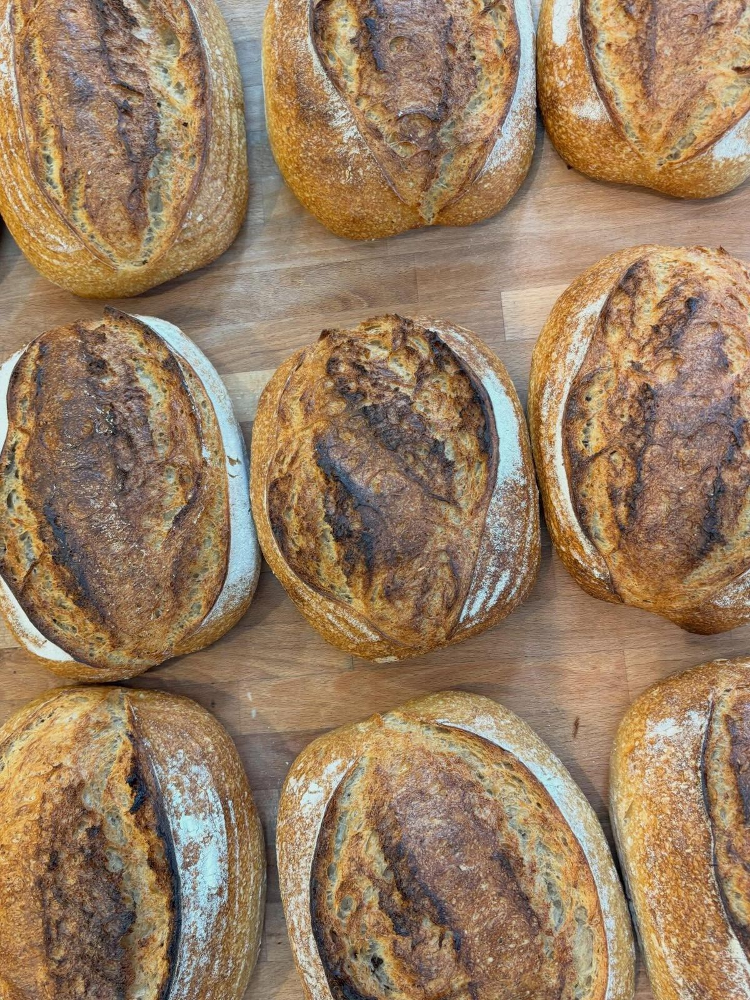
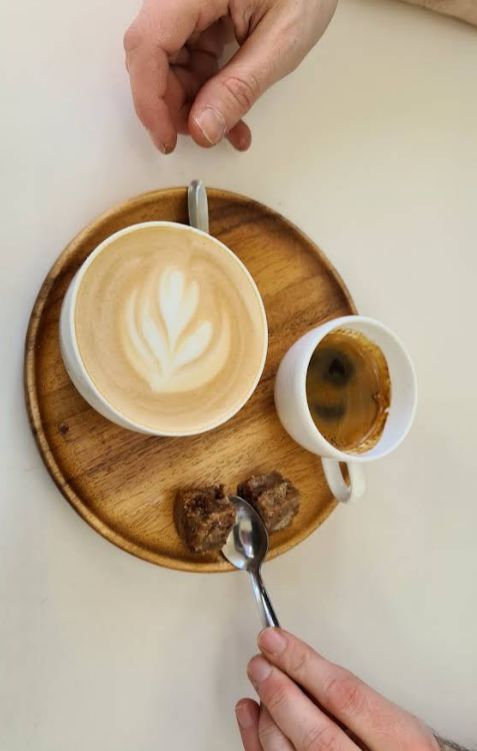
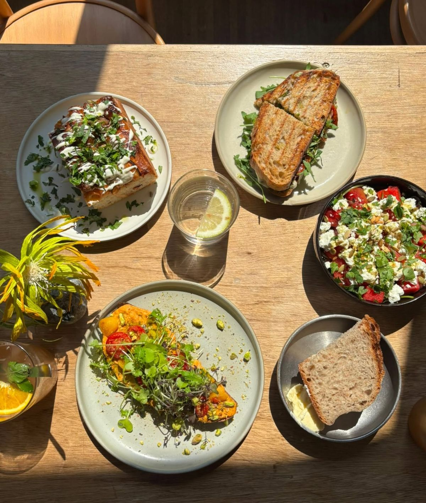
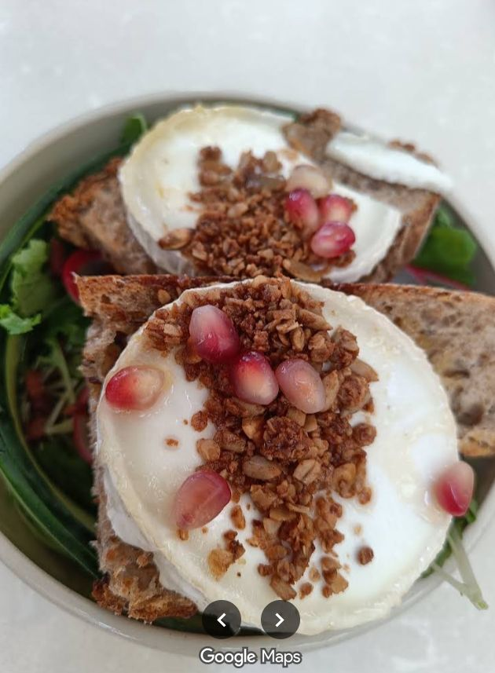
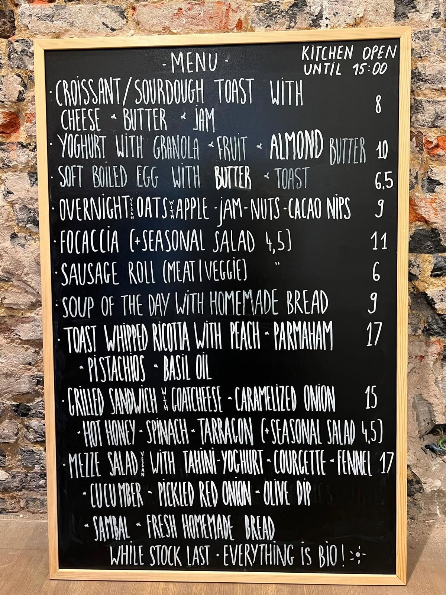
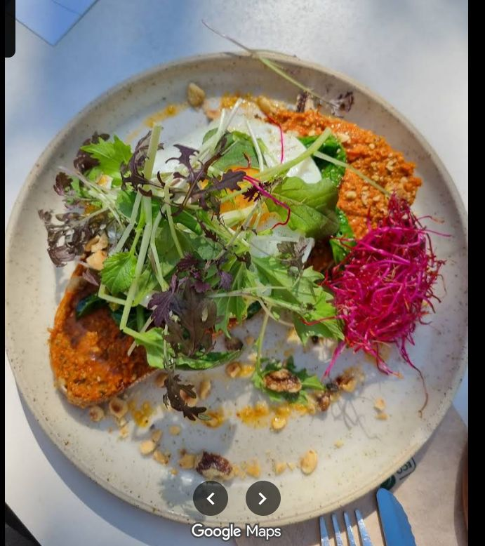
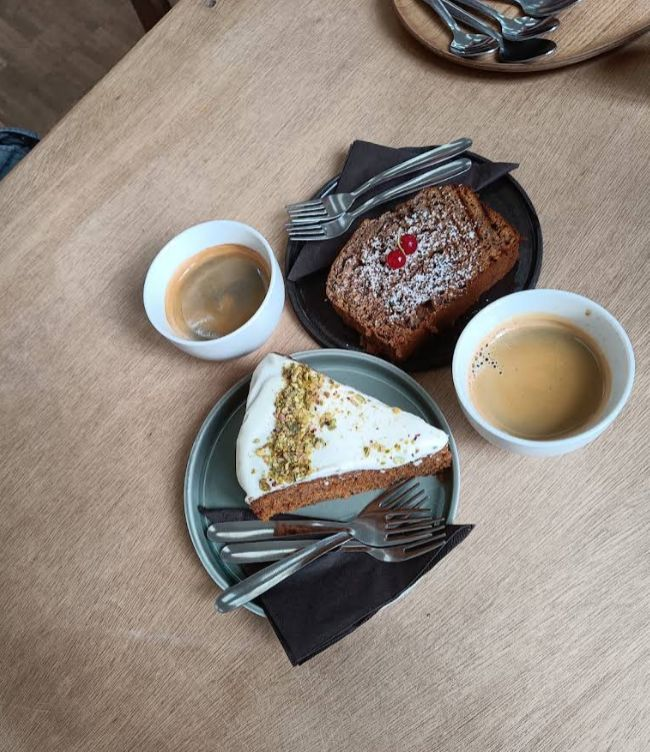
Kom langsgewaaid Come on by
AdresAddress
Harmoniestraat 25b, 2018 Antwerpen →OpeningsurenOpening hours
| MaandagMonday | 08:30 – 17:00 |
| DinsdagTuesday | 08:30 – 17:00 |
| WoensdagWednesday | 08:30 – 17:00 |
| DonderdagThursday | 08:30 – 17:00 |
| VrijdagFriday | 08:30 – 17:00 |
| ZaterdagSaturday | 09:30 – 17:00 |
| ZondagSunday | GeslotenClosed |